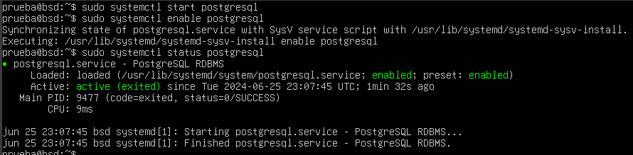
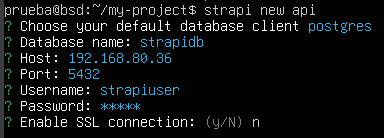
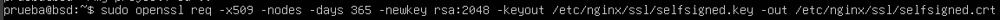
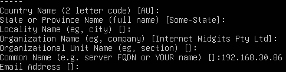
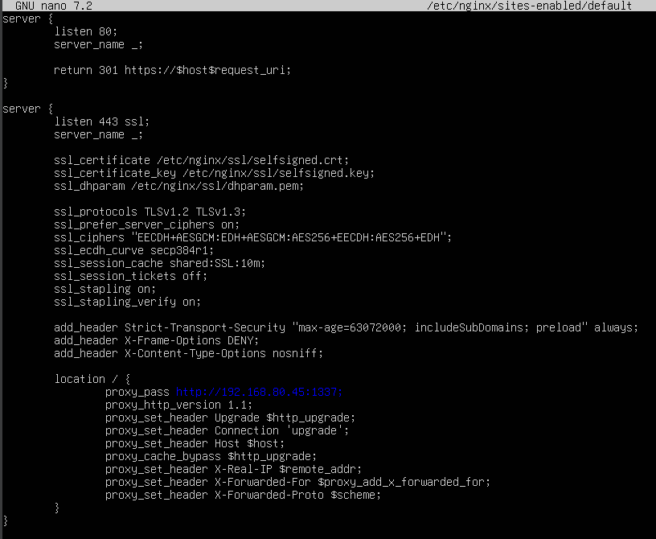

Servidor 1 - PostgreSQL
Paso 1. Actualizar paquetes
Comandos utilizados:
sudo apt updatesudo apt upgrade -y
Paso 2. Instalar PostgreSQL
Comandos utilizados:
sudo apt install postgresql postgresql-contrib -yPaso 3. Verificar si PostgreSQL está corriendo
Comandos utilizados:
sudo systemctl start postgresql,sudo systemctl enable postgresql
Paso 4. Crear un usuario y una base de datos para STRAPI
Comandos utilizados:
sudo -i -u postgrespsqlCREATE USER strapiuser WITH PASSWORD '12345';CREATE DATABASE strapidb;GRANT ALL PRIVILEGES ON DATABASE strapidb TO strapiuser;Paso 5. Salir de la sesión de psql
Comando utilizado: \q, exit
Paso 6. Configuraciones para permitir la conexión con el servidor 2 - STRAPI
Entrar al archivo pg_hba.conf para editarlo
sudo nano /etc/postgresql/16/main/pg_hba.conf
Agregar una línea como la siguiente:
host all all IP_servidor md5
Paso 7. Permitir conexiones remotas
Entrar a editar el archivo postgresql.conf para
permitir las conexiones remotas
sudo nano /etc/postgresql/16/main/postgresql.conf
Descomentar y ajustar la línea listen_addresses:
listen_addresses='*'
Paso 8. Reiniciar PostgreSQL
sudo systemctl restart postgresqlServidor 2 - Strapi y Nginx como proxy inverso
Paso 1. Actualizar paquetes
Comandos utilizados:
sudo apt updatesudo apt upgrade -y
Paso 2. Instalar Node.js y npm
curl -fsSL https://deb.nodesource.com/setup_20.x | sudo -E bashsudo apt-get install -y nodejsPaso 3. Instalar Strapi
Comando utilizado:
npm install -g strapi@latestPaso 4. Crear y configurar un nuevo proyecto Strapi
Comandos utilizados:
mkdir my-projectcd my-projectstrapi new my-project
Seleccionar PostgreSQL y proporcionar los detalles de conexión creados en el servidor 1
Paso 5. Iniciar Strapi para verificar que todo está funcionando correctamente
cd my-projectnpm run develop
Servidor 2 - Servidor Web Nginx
Paso 1. Generar el certificado SSL automatico
Se tiene que crear la carpeta SSL en nginx
Recomendable llenar al menos el campo 'common name' con la IP del servidor
Paso 2. Configuración del archivo default
Se puede modificar el archivo default
Se tiene que agregar el certificado generado en nginx al navegador que se está utilizando
Aqui se agrega la IP de strapi o del servidor
Paso 3. Strapi como servicio
Crear un archivo systemctl para strapi
sudo nano /etc/systemctl/system/strapi.servicePaso 4. Configuración del servicio
sudo systemctl daemon-reloadRecargar los archivos de servicio systemctl
Paso 5. Iniciar y habilitar el servicio strapi
sudo systemctl start strapisudo systemctl enable strapi